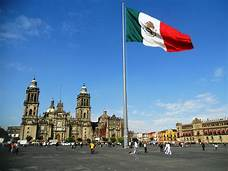
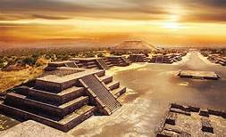

Mexico
Mexico, oficialmente los Estados Unidos Mexicanos, es un pais soberano ubicado en la parte meridional de America del Norte; su capital y ciudad mas poblada es la Ciudad de Mexico. Politicamente es una república representativa, democrqtica, federal y laica, compuesta por 32 entidades federativas (31 estados y la capital federal).
México es el décimo país más poblado del mundo, con una población estimada en más de 129 millones de personas en 2020. La mayoría de ellas tiene como lengua materna el español, al que el estado reconoce como lengua nacional junto a 67 lenguas indígenas propias de la nación, si bien en el país se hablan alrededor de 287 idiomas. Estas cifras convierten a México en el país con mayor número de hispanohablantes, así como en el séptimo país con mayor diversidad lingüística en el mundo.

